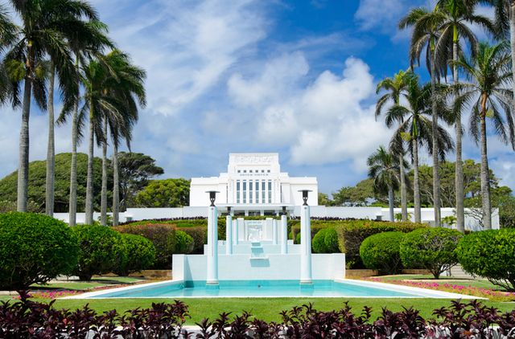

The Laie Hawaii Temple is a beautiful and historic temple of The Church of Jesus Christ of Latter-day Saints (LDS Church) located in Laie, Hawaii. It was the first temple built in Hawaii and the first temple built outside of the continental United States.
The Laie Hawaii Temple was dedicated on November 27, 1919, by Heber J. Grant, who was then the president of the LDS Church. The temple was built in a beautiful location overlooking the Pacific Ocean and is surrounded by lush gardens and tropical landscaping.
The temple is an important religious and cultural landmark in Hawaii and is visited by thousands of people each year. It is open to members of the LDS Church for worship and religious ceremonies, and it is also open to the public for tours and visits.
